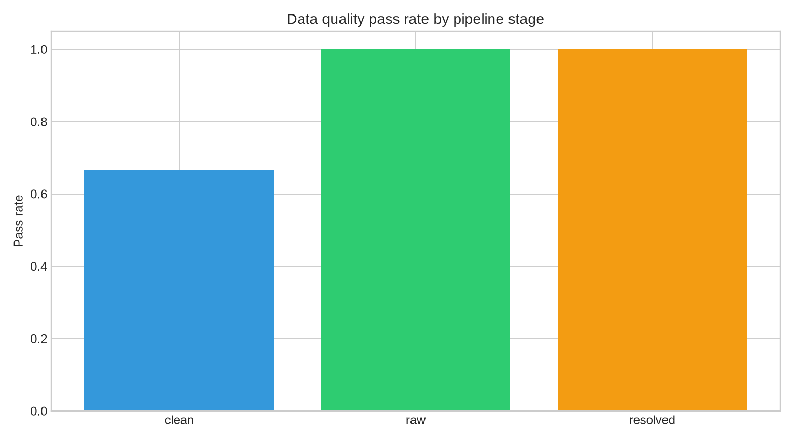
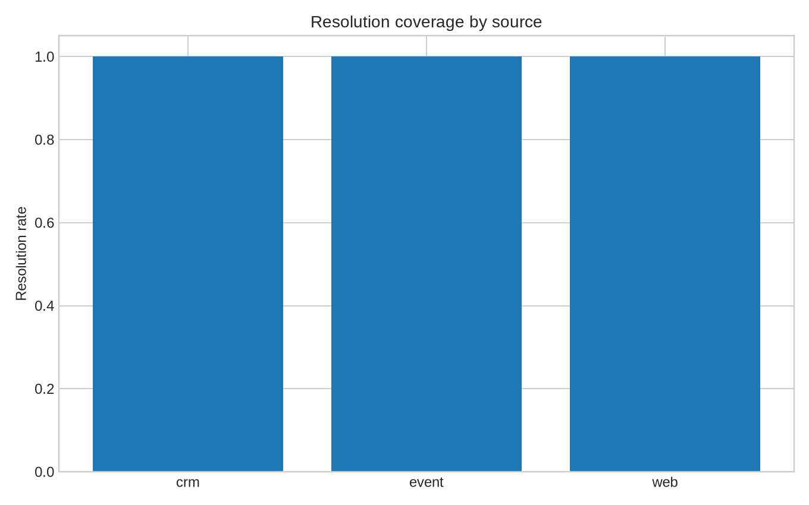

B2B Identity Resolution
Purpose: resolve fragmented professional signals into unique, reliable synthetic identities while making data quality visible.
20
public companies
120
synthetic contacts
375
fragmented signals
1.00
matching F1
Quality by stage

Resolution coverage

README · Quality documentation · Matching metrics